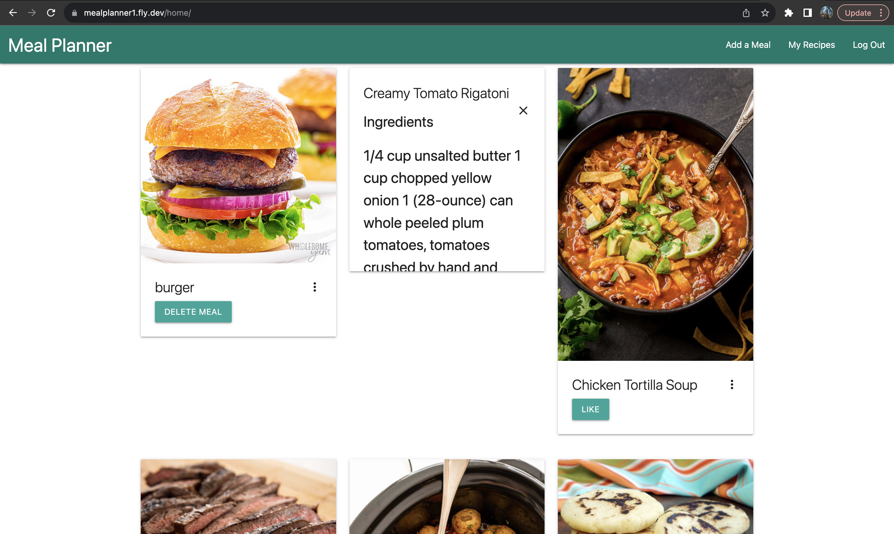
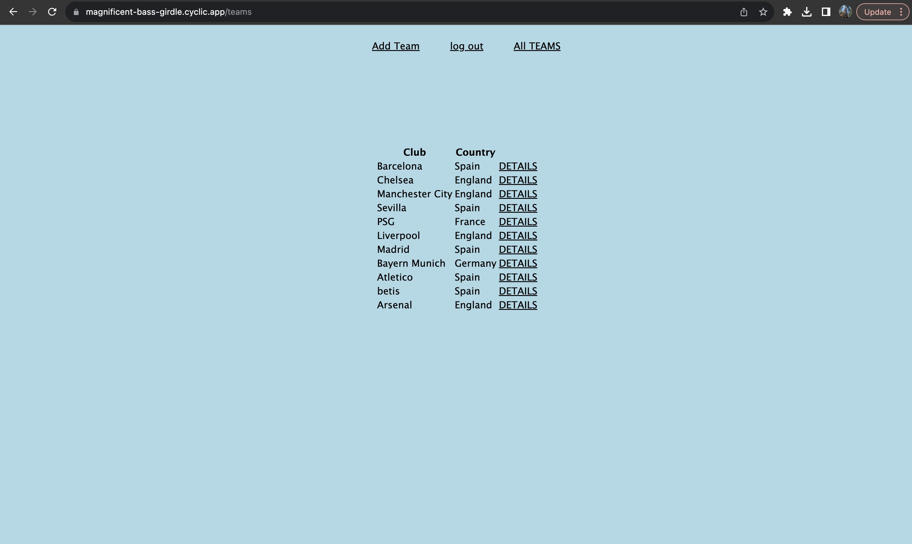
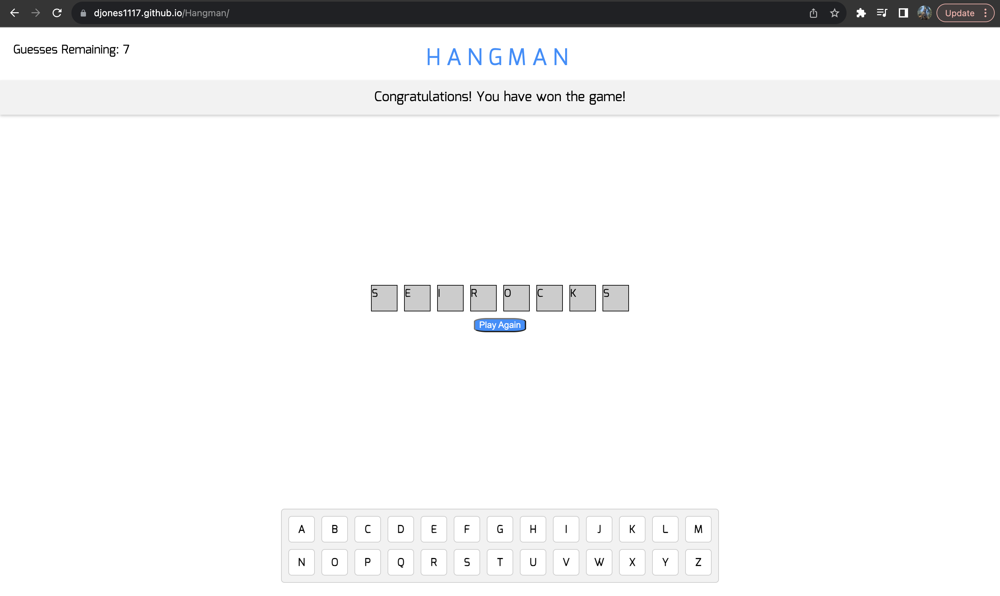

Meal Planner
A web application used for creating meals, deleting meals,
interacting with other users' meals, and storing your favorite
recipes. Implemented AWS uploads using AWS S3 Bucket. Acted as
Github manager, overseeing the management of repositories. Served as
Scrum Master, finalizing all meetings.
Live App
Github Repo

Every Hike
An application that allows users to make an account, create posts
about hikes, and interact with other users. Developed by using the
MERN Stack, implemented CRUD operations and client-side routing for
seamless navigation. Utilized an API key to enable users to discover
activities within national parks.
Live App
Github Repo

Soccer Tracker
An application that allows users to create a soccer team and fill it
with their fantasy signings. Implemented full CRUD functionality
using Express.js so that users can create, edit the players, delete,
and can read information about each team created. Employed the MEN
Stack to implement server-side routing.
Live App
Github Repo

Hangman
A static web application that renders a game of Hangman using HTML,
CSS, and JS. Renders a win/loss message depending if the user
correctly guesses the secret word. Developed by using Vanilla
JavaScript.
Live App
Github Repo